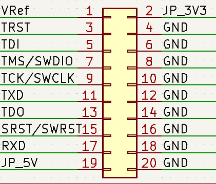

Vllink Box 快速上手
产品图
功能简介
USB2.0 High Speed 480M，集成
CMSIS-DAP V1、CMSIS-DAP V2、CDC串口接口具备一个
IDC 20Pin 2.54mm接口，支持外部参考电压，也支持内部跳线帽短接3.3V单个调试器可作为有线调试器使用
两个调试器可配对作为无线调试器使用
无线模式下，支持所有调试及串口功能
无线模式下，两端的TTL串口可用于无线对传 详见
调试接口定义

接口 |
介绍 |
|---|---|
VRef |
参考电平，支持跳线帽短接JP_3V31 |
TRST |
JTAG复位口 |
TDI |
JTAG数据口 |
TMS / SWDIO |
JTAG模式口、SWD数据口 |
TCK / SWCLK |
JTAG时钟口、SWD时钟口 |
TXD |
串口输出 |
TDO |
JTAG数据口 |
SRST / SWRST |
芯片复位口 |
RXD |
串口输入 |
JP_5V |
跳线帽短接引出内部5V1 |
JP_3V3 |
跳线帽短接引出内部3.3V1 |
GND |
共地口 |
[1] 接法见下图
模式介绍及切换
恢复出厂：长按按键10秒
模式切换
可通过双击按键切换运行模式
基本模式有三种，分别是有线模式、无线接收模式（AP）以及无线发送模式（STA）
有线模式
板上红灯、黄灯亮起
USB设备启用，可与计算机通信
调试口可连接目标板
无线接收模式（AP）
板上红灯、黄灯亮起，板上蓝灯作为连接指示状态灯，未连接时闪烁、已连接后常亮
USB设备启用，可与计算机通信
无线发送模式（STA）
板上红灯、黄灯亮起，板上绿灯作为连接指示状态灯，未连接时闪烁、已连接后常亮
USB设备关闭，不可与计算机通信
配置工具
链接：基础配置
使用说明：
1. 使用Chrome内核浏览器打开上述链接 2. 连接调试器 3. 点击“Connect Vllink” 4. 在小弹窗中选中DAP，点击连接 5. 连接后，上面的常规设置文本即可修改，修改后需要点击“同步设置”保存，注意无效的配置将在同步时被清除
注意：当电脑端所连的调试器为AP模式，且已连接远端STA，则此工具将读写远端STA的配置。